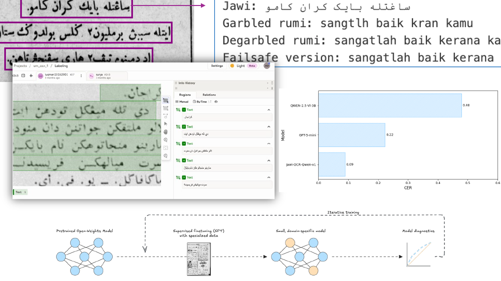
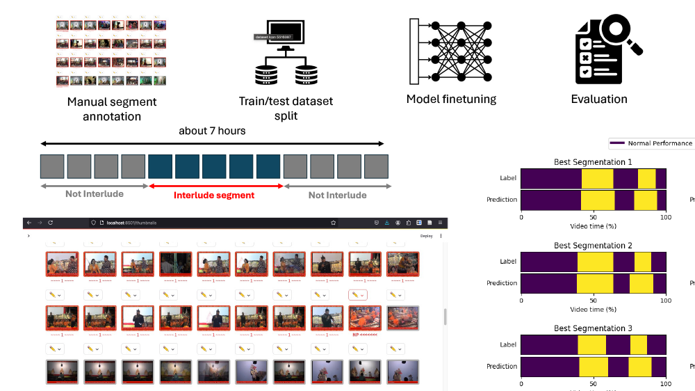
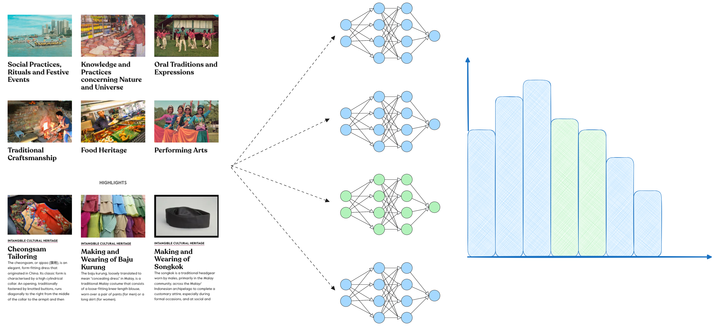

National University of Singapore
Budaya Lab
Computational methods for documenting and analyzing cultural heritage in Southeast Asia.
Projects

The Jawi AI Project
AI tools for reading, searching and analysing historical Malay documents in Jawi script.
Read more →
Video Segmentation for Intangible Cultural Heritage
Segmenting recordings of performances into meaningful actions, with Wayang Kulit as a case study.
Read more →
Computational Social Simulations for Cultural Policy
Using LLMs to simulate how different communities might respond to heritage policies.
Read more →Code, models and data
[Placeholder] We release our code on GitHub and our models and datasets on Hugging Face, with licences and usage terms agreed with the communities and archives we work with.
Recent papers
- Advancing OCR and Word Sense Disambiguation for the Jawi Script using LLMs and VLMs Digital Humanities 2025
- Computational segmentation of Wayang Kulit video recordings using a Cross-Attention Temporal Model. CHR, pp. 1231-1241